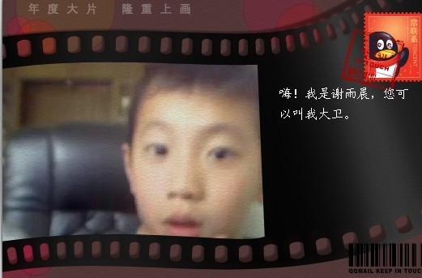
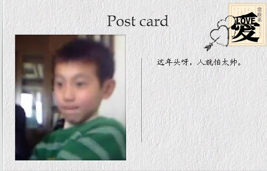

别怪我花心（三）
#1 别怪我花心（三） 作者：茗弈宽容 发表时间：2010-4-19 13:18:48

大家想必已猜到，另一个小朋友就是我的大卫---谢雨晨。可中间那个，难道是楼上的大哥哥，也喜欢五子棋，跑来“偷艺”的？在我询问下，嘉炜告诉我，是他爸爸！这么年轻呀，真出乎意料。
我的大卫，性格没炜哥那么外向，话比较少，上课一般就是嘉炜在回答问题。但在嘉炜去厕所或人少的时候，大卫会对我说：“小刀老师，告诉你件事，我们学校。。。。。”大卫是我的小乖乖，两个孩子在我内心来说，对他们的喜欢是相等的。为了鼓励他们学棋，我搞了个奖励分的制度，回答问题好，或认真听课做题的，我会加分。由于嘉炜的独立个性，相信他以后在社会上也不会吃亏，很快他加满了一千分，在我这换了一大堆棋谱，又从零开始。而乖乖大卫，由于不太积极，分要落后很多。当他加到了500分，我问他换棋谱吗？乖乖想了想：不换！呵呵，把分存着，舍不得换呢。我想偷偷给他点谱，又怕嘉炜知道了说我不公平。大卫放寒假的时候考试成绩非常好，我奖励了一百分。
有时候晚上上课，2个小P孩不太认真，我就说：下面要认真听了，有分加的哟！“有分加呀小刀老师？”嘉炜立刻表现出了兴趣。在我的提示下，那道题最后就3步胜了，嘉炜做出来了。加5分。“10分！”那边的嘉炜立刻跟我讲价。“５分，一口价！要就要，不要就算了。”我态度很坚决。“要！要！要！”呵呵，真拿他没撤。我的小乖在旁边不说话的，很安静。但我总会照顾他，不时点名让他回答。一次很长时间没听到他的声音，我就问：“大卫，睡着了吗？”“是！”小乖乖大声回答。昨天是嘉炜１１岁生日，２个小不点把攒的分换了些棋谱，“嘉炜想要什么礼物？＂＂棋谱。”我给嘉炜做了一些图片，送了个蓝钻和一些棋谱作为生日礼物，臭小子爱美。“嘉炜，你的生日首先要感谢妈妈生育养育你，去给妈妈说谢谢。”那边听到嘉炜在给妈妈说感谢的话，和今后的保证，妈妈很欣慰。大卫的生日和我挨着，得１２月了。
知道戴宇轩来过成都，２个娃娃很向往，戴宇轩是他们超越的目标。娃娃常说想来成都找我玩，我告诉 他们：必须学习成绩好了，棋也练好了，在家里听妈妈的话，以后才可以来的。
［ 五子痴 于 2010-4-20 18:56:26 时花20金币送鲜花一朵］
#2 Re:别怪我花心（三） 作者：茗奕的飞猪 发表时间：2010-4-21 16:51:22
 很可爱。
很可爱。